מסלול הסדר
- התחלה: קיץ 1959
- מתנגדים: בג"ץ שביטל את חוק טל בפברואר 2012
- כמות התחלה: רק 1 ישיבה (כרם ביבנה), רק 3 תלמידים
- כמות כיום: כ 80 ישיבות הסדר, כ 12,000 חיילים
- יחידה: קרבי
- גורם מאשר: שר הביטחון שמעון פרס, באוקטובר 1974


